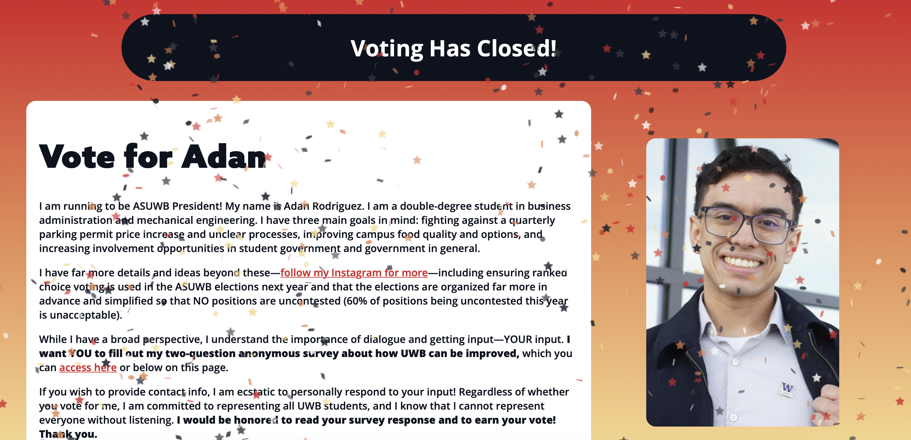
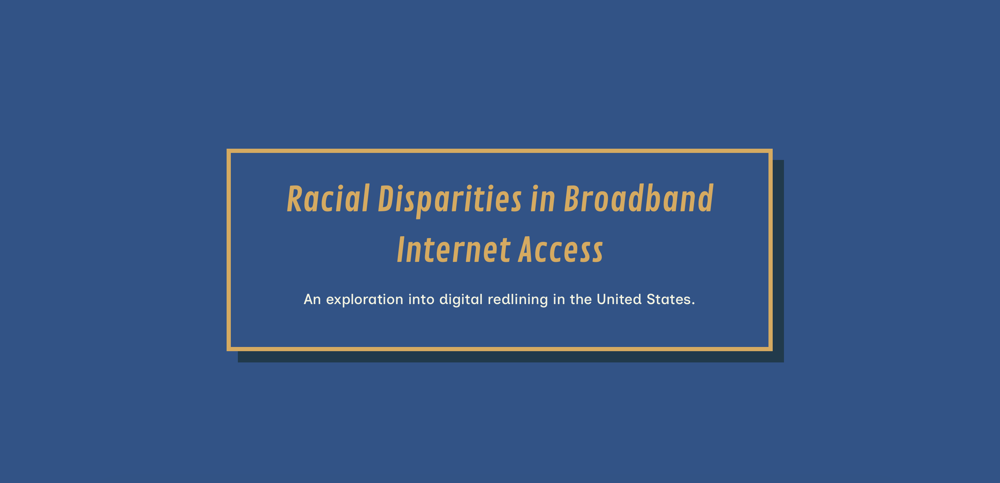
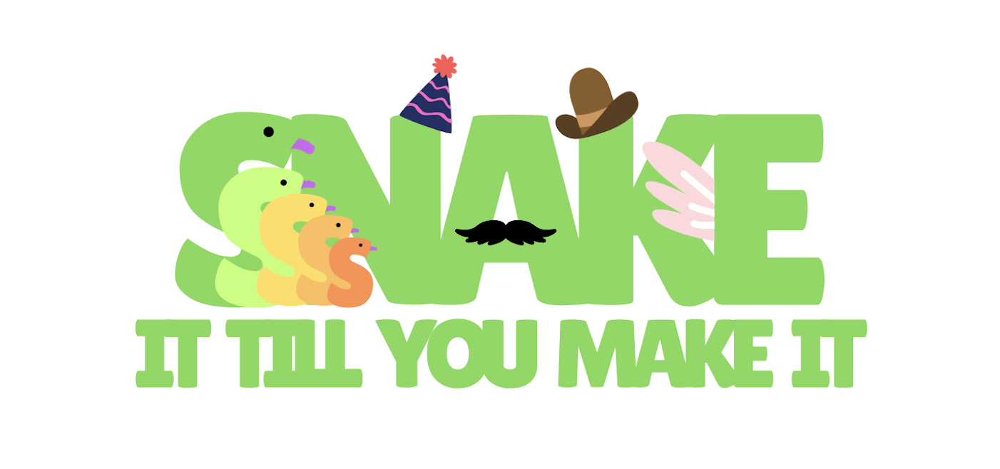
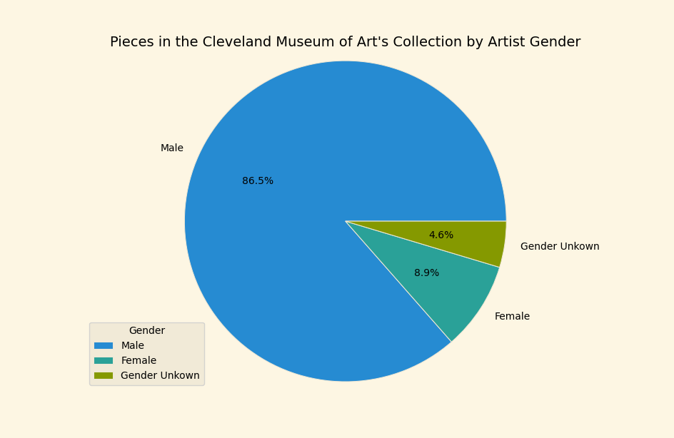
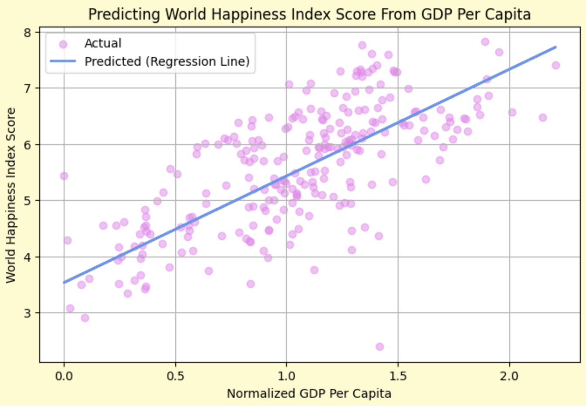
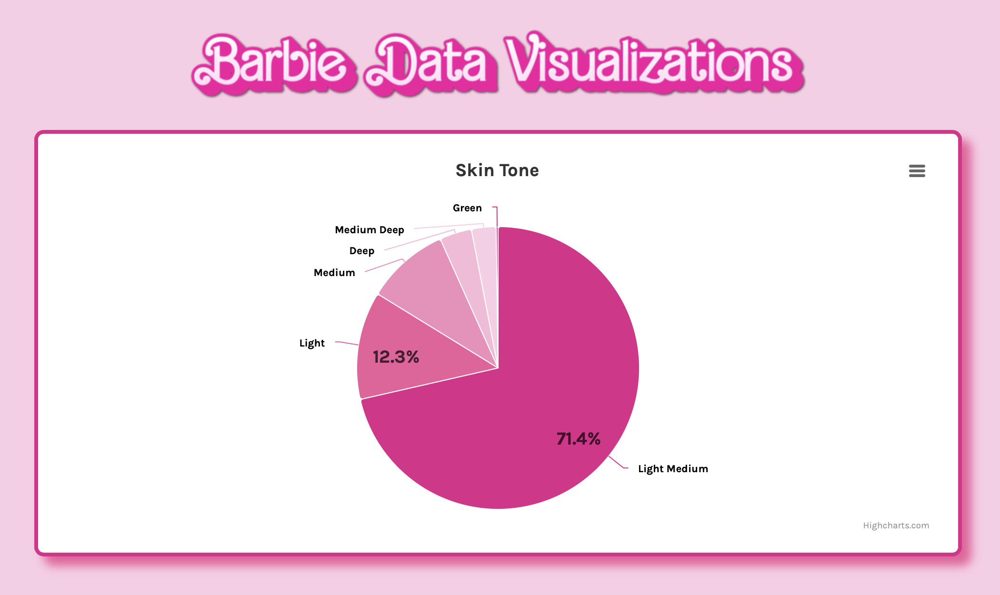
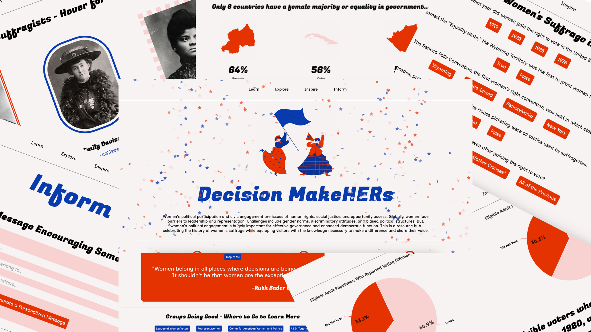

Hello, World!
I love coding thoughtful projects for fun and for social good. Through various experiences I'm very grateful for, I've studied Web Development, Cybersecurity, Cryptography, Data Science, AI, ML, Mobile App Development, and Game Design. Girls Who Code was a massive part of my high school life. In addition to participating in Girls Who Code summer programs for four years, I was a co-president of my school's Girls Who Code club. I also enjoyed coding for my competition robotics team in high school, and now for my college's University Rover Challenge team. Many people love coding for the sense of accomplishment that comes with beating bugs and finding solutions. For me, this extends to tackling real life problems. Over time, code has given me a voice to do good and advocate for things I deeply care about. (Check out some of my favorite projects below!)
Experience
- Girls Who Code Summer Immersion Program 2021
- Girls Who Code Self-Paced Program 2022
- Girls Who Code Self-Paced Program 2023
- Girls Who Code Self-Paced Program 2024
- Girls Who Code Club Co-President
- Girls Who Code Humanize AI Challenge Winner 2023
- Kode With Klossy Mobile App Development Camp 2023
- Kode With Klossy Data Storytelling Alumni Program 2025
- Kode With Klossy Applied Data Science Alumni Program 2025
- Kode With Klossy ML x Finance Alumni Program 2025
Hackathons/Game Jams
- UWB Hacks: Save the World! 2025
- CS Girlies AI vs. HI Hackathon 2025
- NASA International Space Apps Challenge 2025
- Husky Game Dev Fall 2025 Game Jam
- STEMpower Hacks 2025

UWB Hacks: Save the World! 2025

Girls Who Code at the Club Fair

Girls Who Code Club 2024

Girls Who Code at the Club Fair

Girls Who Code Club 2023

Facing Bias
Winning submission to Girls Who Code's Humanize AI Challenge. A website exploring bias in facial recognition technologies and my experience with Apple's Face ID authentication system as an identical twin. Interviewed my community to learn about bias in AI projects and proposed solutions to mitigate harm.

Coral Comeback
An educational iOS app built in Xcode using Swift and SwiftUI with resources, facts, and a quiz about coral reef decline.

SC VEX 99621 Website
A multipage website for Shorecrest High School's VEX Robotics Competition teams communicating club history and achievements. Made with HTML, CSS, and JavaScript.
Bee a Hero
An informational website with an embedded game to raise awareness about bee conservation and encourage people to take action in an accessible and impactful way. Submitted to UWB Hacks: Save the World! in 2025.

Adan for President
An accessible and responsive campaign website for a friend running for a student government position, helping him communicate his platform and goals in an engaging way. Incorporated a countdown timer until voting opened and closed.

Data Visualization: Racial Disparities in Broadband Internet Access
An interactive data-driven narrative exploring and analyzing digital redlining in the United States. Built using the Svelte JavaScript framework.

Sssssnake It Till You Make It
An authentically "human" snake dress up game built in C# celebrating everything chaotic and cozy about the human experience. Submitted to the CS Girlies AI vs. HI hackathon.

Museums as Mirrors
A data science project exploring representation and artist diversity in today's art museums. Wrote a collection script to gather data from the Cleveland Museum of Art Open Access API. Cleaned data by organizing it in a tabular structure, correcting structural inconsistencies, and standardizing formats. Graphically analyzed data in Matplotlib and presented conclusions.
Make Space in Space
Space knows no limits, neither should our definition of who can explore it. An HTML, CSS, and JavaScript "activist toolkit" website considering representation in the space industry.
Empowering Data: Women's Wellness
A data science project employing pandas and Matplotlib seeking to understand how a young population and female majority in government may have contributed to a small increase in girls' education in Rwanda between 2008 and 2015
Floral Industry "Activist Toolkit" Website
With the goal of getting a bloom from field to vase in just 3 to 5 days, the cut flower market is comparable to the fast fashion industry. An exhaustively researched 11 page HTML, CSS, and JavaScript website presenting the negative social and environmental impacts of the imported flower stem industry. Used JavaScript to add "key features" such as scroll indicators, text effects, a fun fact button, and a personalized script generator to spread awareness.
Sustainable City Planning With NASA Earth Observation Data
A website helping urban planners make data-driven decisions in the face of climate change. Users can place markers on a map and gain insight into local and global climate impacts. Built with SQL, Python, HTML, and CSS. Submitted to the NASA International Space Apps Challenge 2025 Data Pathways to Healthy Cities and Human Settlements track.

Bothell Racing Development Website
Designed and developed a simple HTML and CSS website for UW Bothell's Formula SAE team. Worked with the club to present information to students and sponsors in an accessible and intuitive way.
Pandas in a Pickle
A CYOA-style game about a panda facing many decisions on her way to the pickleball court. Made using vanilla HTML, CSS, and JavaScript in less than 24 hours. Placed 3rd in the Husky Game Dev Fall 2025 Game Jam.

Economic Indicators of World Happiness
Built and trained 7 machine learning models on a dataset placing World Happiness Index data alongside inflation metrics to uncover patterns and opportunities. Explored relationships between economic conditions and happiness, well-being, and societal progress. Beyond technical modeling, considered the practical and social impacts of my findings. Presented conclusions to demonstrate how data science can shape a more inclusive and intelligent financial future. Coded in Python using the Google Colab Jupyter Notebook environment.

Barbie Data Visualizations
Visualized demographics of characters in Barbie movies for practice with the Highcharts charting library.

Decision MakeHERs
An accessible, responsive, and interactive HTML, CSS, and JavaScript toolkit encouraging women's leadership, political participation, and civic engagement while celebrating the history of women's suffrage. Incorporated the Highcharts and JS Confetti libraries. Submitted to STEMpower Hacks 2025.